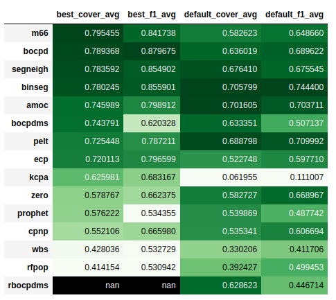
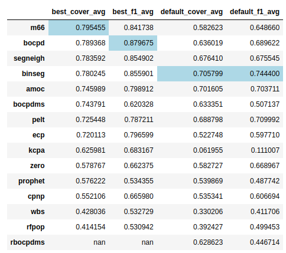
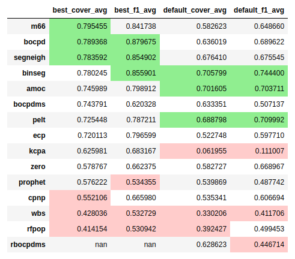
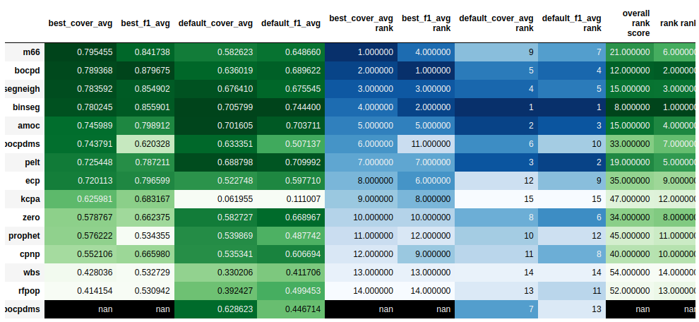

m66
A time series data points are anomalous if the 6th median is 6 standard deviations (six-sigma) from the time series 6th median standard deviation and persists for x_windows, where x_windows = int(window / 2).
This algorithm finds SIGNIFICANT changepoints in a time series, similar to PELT and Bayesian Online Changepoint Detection, however it is more robust to instantaneous outliers and more conditionally selective of changepoints.
See the docstrings - https://earthgecko-skyline.readthedocs.io/en/latest/skyline.custom_algorithms.html#module-custom_algorithms.m66
See the custom_algorithm source - https://github.com/earthgecko/skyline/blob/master/skyline/custom_algorithms/m66.py
m66 TCPDBench results
https://github.com/alan-turing-institute/TCPDBench
Seeing as there is a changepoint algorithm benchmarking app might as well test it. It would probably score low seeing as it is not detecting all changepoints by design, only significant changepoints. But it scores but than expected, it is places 6th overall.
Heatmap

Best highlighted

Top and bottom 3

Results and rank

Testing m66 with TCPDBench
“If you want to climb the mountain, you most do all the hard things and climb it.”
—Kukuczka
Apart from some lacking docs and deps bugs with TCPDBench, got there in the end.
Build datasets on CentOS 8
Set up TCPD and TCPDBench on a CentOS 8 server
https://github.com/alan-turing-institute/TCPD
https://github.com/alan-turing-institute/TCPDBench
yum install texlive
yum install latekmk
PYTHON_VERSION="3.8.11"
PYTHON_MAJOR_VERSION="3.8"
PYTHON_VIRTUALENV_DIR="/opt/python_virtualenv"
PROJECT="TCPDBench-py3811"
cd "${PYTHON_VIRTUALENV_DIR}/projects"
virtualenv --python="${PYTHON_VIRTUALENV_DIR}/versions/${PYTHON_VERSION}/bin/python${PYTHON_MAJOR_VERSION}" "$PROJECT"
cd /opt/python_virtualenv/projects/$PROJECT/
source bin/activate
# dataset
# As per https://github.com/alan-turing-institute/TCPD#using-the-command-line
git clone https://github.com/alan-turing-institute/TCPD
cd TCPD
/opt/python_virtualenv/projects/$PROJECT/bin/"pip${PYTHON_MAJOR_VERSION}" install -r requirements.txt
Installing collected packages: six, urllib3, pytz, python-dateutil, numpy, idna, charset-normalizer, certifi, soupsieve, requests, regex, pyrsistent, pandas, multitasking, lxml, et-xmlfile, chardet, attrs, yfinance, Pillow, openpyxl, jsonschema, diff-match-patch, clevercsv, beautifulsoup4
Successfully installed Pillow-8.3.1 attrs-21.2.0 beautifulsoup4-4.9.3 certifi-2021.5.30 chardet-4.0.0 charset-normalizer-2.0.4 clevercsv-0.7.0 diff-match-patch-20200713 et-xmlfile-1.1.0 idna-3.2 jsonschema-3.2.0 lxml-4.6.3 multitasking-0.0.9 numpy-1.21.1 openpyxl-3.0.7 pandas-1.3.1 pyrsistent-0.18.0 python-dateutil-2.8.2 pytz-2021.1 regex-2021.8.3 requests-2.26.0 six-1.16.0 soupsieve-2.2.1 urllib3-1.26.6 yfinance-0.1.63
(TCPDBench-py3811) [root@server TCPD]
/opt/python_virtualenv/projects/$PROJECT/bin/"pip${PYTHON_MAJOR_VERSION}" list
(TCPDBench-py3811) [root@server TCPD] /opt/python_virtualenv/projects/$PROJECT/bin/"pip${PYTHON_MAJOR_VERSION}" list
Package Version
------------------ ---------
attrs 21.2.0
beautifulsoup4 4.9.3
certifi 2021.5.30
chardet 4.0.0
charset-normalizer 2.0.4
clevercsv 0.7.0
diff-match-patch 20200713
et-xmlfile 1.1.0
idna 3.2
jsonschema 3.2.0
lxml 4.6.3
multitasking 0.0.9
numpy 1.21.1
openpyxl 3.0.7
pandas 1.3.1
Pillow 8.3.1
pip 21.2.4
pyrsistent 0.18.0
python-dateutil 2.8.2
pytz 2021.1
regex 2021.8.3
requests 2.26.0
setuptools 57.4.0
six 1.16.0
soupsieve 2.2.1
urllib3 1.26.6
wheel 0.37.0
yfinance 0.1.63
(TCPDBench-py3811) [root@server TCPD]
Build datasets
/opt/python_virtualenv/projects/$PROJECT/bin/"python${PYTHON_MAJOR_VERSION}" build_tcpd.py -v collect
(TCPDBench-py3811) [root@server TCPD] /opt/python_virtualenv/projects/$PROJECT/bin/"python${PYTHON_MAJOR_VERSION}" build_tcpd.py -v collect
Running collect action for dataset: apple ... ok
Running collect action for dataset: bee_waggle_6 ... ok
Running collect action for dataset: bitcoin ... ok
Running collect action for dataset: iceland_tourism ... ok
Running collect action for dataset: measles ... ok
Running collect action for dataset: occupancy ... ok
Running collect action for dataset: ratner_stock ... ok
Running collect action for dataset: robocalls ... ok
Running collect action for dataset: scanline_126007 ... ok
Running collect action for dataset: scanline_42049 ... ok
(TCPDBench-py3811) [root@server TCPD]
Check datasets
/opt/python_virtualenv/projects/$PROJECT/bin/"python${PYTHON_MAJOR_VERSION}" ./utils/check_checksums.py -v -c ./checksums.json -d ./datasets
(TCPDBench-py3811) [root@server TCPD] /opt/python_virtualenv/projects/$PROJECT/bin/"python${PYTHON_MAJOR_VERSION}" ./utils/check_checksums.py -v -c ./checksums.json -d ./datasets
Checking apple.json
Checking bank.json
Checking bee_waggle_6.json
Checking bitcoin.json
Checking brent_spot.json
Checking businv.json
Checking centralia.json
Checking children_per_woman.json
Checking co2_canada.json
Checking construction.json
Checking debt_ireland.json
Checking gdp_argentina.json
Checking gdp_croatia.json
Checking gdp_iran.json
Checking gdp_japan.json
Checking global_co2.json
Checking homeruns.json
Checking iceland_tourism.json
Checking jfk_passengers.json
Checking lga_passengers.json
Checking measles.json
Checking nile.json
Checking occupancy.json
Checking ozone.json
Checking quality_control_1.json
Checking quality_control_2.json
Checking quality_control_3.json
Checking quality_control_4.json
Checking quality_control_5.json
Checking rail_lines.json
Checking ratner_stock.json
Checking robocalls.json
Checking run_log.json
Checking scanline_126007.json
Checking scanline_42049.json
Checking seatbelts.json
Checking shanghai_license.json
Checking uk_coal_employ.json
Checking unemployment_nl.json
Checking us_population.json
Checking usd_isk.json
Checking well_log.json
All ok.
(TCPDBench-py3811) [root@server TCPD]
Set up TCPDBench
cd /opt/python_virtualenv/projects/$PROJECT/
source bin/activate
# As per https://github.com/alan-turing-institute/TCPDBench#getting-started
git clone --recurse-submodules https://github.com/alan-turing-institute/TCPDBench
cd TCPDBench
/opt/python_virtualenv/projects/$PROJECT/bin/"pip${PYTHON_MAJOR_VERSION}" install -r ./analysis/requirements.txt
Installing collected packages: sortedcontainers, intervaltree, termcolor, tabulate, scipy, labella, colorama
Successfully installed colorama-0.4.4 intervaltree-3.1.0 labella-0.9.8 scipy-1.7.1 sortedcontainers-2.4.0 tabulate-0.8.9 termcolor-1.1.0
(TCPDBench-py3811) [root@server TCPDBench]
Install m66 requirement
cd /opt/python_virtualenv/projects/$PROJECT/
bin/"pip${PYTHON_MAJOR_VERSION}" install bottleneck
(TCPDBench-py3811) [root@server TCPDBench-py3811] bin/"pip${PYTHON_MAJOR_VERSION}" install bottleneck
Collecting bottleneck
Using cached Bottleneck-1.3.2-cp38-cp38-linux_x86_64.whl
Requirement already satisfied: numpy in ./lib/python3.8/site-packages (from bottleneck) (1.21.1)
Installing collected packages: bottleneck
Successfully installed bottleneck-1.3.2
(TCPDBench-py3811) [root@server TCPDBench-py3811]
Errors on CentOS 8
Latex / texlive error. And seemingly no texlive-standalone package on CentOS 8 :(
cd /opt/python_virtualenv/projects/$PROJECT/TCPDBench
make results
...
...
python ./analysis/scripts/rank_plots.py -i analysis/output/tables/best_cover_uni_full.json -o analysis/output/rankplots/rankplot_best_cover_uni.tex -b max --type best
Warning: Filtering out RBOCPDMS due to insufficient results.
Latexmk: This is Latexmk, John Collins, 18 June 2019, version: 4.65.
Rule 'pdflatex': The following rules & subrules became out-of-date:
'pdflatex'
------------
Run number 1 of rule 'pdflatex'
------------
------------
Running 'pdflatex --interaction=nonstopmode -recorder -output-directory="/tmp/tmp16cu66k5" "/tmp/tmp16cu66k5/labella_text.tex"'
------------
Latexmk: applying rule 'pdflatex'...
This is pdfTeX, Version 3.14159265-2.6-1.40.19 (TeX Live 2018) (preloaded format=pdflatex)
restricted \write18 enabled.
entering extended mode
(/tmp/tmp16cu66k5/labella_text.tex
LaTeX2e <2017-04-15>
Babel <3.17> and hyphenation patterns for 3 language(s) loaded.
! LaTeX Error: File `standalone.cls' not found.
Type X to quit or <RETURN> to proceed,
or enter new name. (Default extension: cls)
Enter file name:
! Emergency stop.
<read *>
l.3 \begin
{document}^^M
! ==> Fatal error occurred, no output PDF file produced!
Transcript written on /tmp/tmp16cu66k5/labella_text.log.
Latexmk: Missing input file: 'standalone.cls' from line
'! LaTeX Error: File `standalone.cls' not found.'
Collected error summary (may duplicate other messages):
pdflatex: Command for 'pdflatex' gave return code 1
Refer to '/tmp/tmp16cu66k5/labella_text.log' for details
Latexmk: Use the -f option to force complete processing,
unless error was exceeding maximum runs, or warnings treated as errors.
=== TeX engine is 'pdfTeX'
Latexmk: Errors, so I did not complete making targets
Traceback (most recent call last):
File "./analysis/scripts/rank_plots.py", line 151, in <module>
main()
File "./analysis/scripts/rank_plots.py", line 145, in main
make_rank_plot(
File "./analysis/scripts/rank_plots.py", line 90, in make_rank_plot
tl = TimelineTex(plot_data, options=options)
File "/opt/python_virtualenv/projects/TCPDBench-py3811/lib/python3.8/site-packages/labella/timeline.py", line 509, in __init__
super().__init__(items, options=options, output_mode="tex")
File "/opt/python_virtualenv/projects/TCPDBench-py3811/lib/python3.8/site-packages/labella/timeline.py", line 145, in __init__
self.items = self.parse_items(dicts, output_mode=output_mode)
File "/opt/python_virtualenv/projects/TCPDBench-py3811/lib/python3.8/site-packages/labella/timeline.py", line 179, in parse_items
it = Item(
File "/opt/python_virtualenv/projects/TCPDBench-py3811/lib/python3.8/site-packages/labella/timeline.py", line 97, in __init__
self.width, self.height = self.get_text_dimensions()
File "/opt/python_virtualenv/projects/TCPDBench-py3811/lib/python3.8/site-packages/labella/timeline.py", line 107, in get_text_dimensions
width, height = text_dimensions(
File "/opt/python_virtualenv/projects/TCPDBench-py3811/lib/python3.8/site-packages/labella/tex.py", line 139, in text_dimensions
width, height = get_latex_dims(tex, silent=silent,
File "/opt/python_virtualenv/projects/TCPDBench-py3811/lib/python3.8/site-packages/labella/tex.py", line 106, in get_latex_dims
compile_latex(fname, tmpdirname, latexmk_options, silent=silent)
File "/opt/python_virtualenv/projects/TCPDBench-py3811/lib/python3.8/site-packages/labella/tex.py", line 94, in compile_latex
raise (e)
File "/opt/python_virtualenv/projects/TCPDBench-py3811/lib/python3.8/site-packages/labella/tex.py", line 89, in compile_latex
output = subprocess.check_output(command, stderr=subprocess.STDOUT)
File "/opt/python_virtualenv/versions/3.8.11/lib/python3.8/subprocess.py", line 415, in check_output
return run(*popenargs, stdout=PIPE, timeout=timeout, check=True,
File "/opt/python_virtualenv/versions/3.8.11/lib/python3.8/subprocess.py", line 516, in run
raise CalledProcessError(retcode, process.args,
subprocess.CalledProcessError: Command '['latexmk', '--pdf', '--outdir=/tmp/tmp16cu66k5', '--interaction=nonstopmode', '/tmp/tmp16cu66k5/labella_text.tex']' returned non-zero exit status 12.
make: *** [Makefile:226: analysis/output/rankplots/rankplot_best_cover_uni.tex] Error 1
(TCPDBench-py3811) [root@server TCPDBench]
Needs latex so needs to be done local.
Trying POCing on Ubuntu 14.04 laptop as CentOS 8 has no texlive-standalone
PYTHON_VERSION="3.8.6"
PYTHON_MAJOR_VERSION="3.8"
PYTHON_VIRTUALENV_DIR="/opt/python_virtualenv"
PROJECT="TCPDBench-py386"
cd "${PYTHON_VIRTUALENV_DIR}/projects"
virtualenv --python="${PYTHON_VIRTUALENV_DIR}/versions/${PYTHON_VERSION}/bin/python${PYTHON_MAJOR_VERSION}" "$PROJECT"
cd /opt/python_virtualenv/projects/$PROJECT/
source bin/activate
# dataset
# As per https://github.com/alan-turing-institute/TCPD#using-the-command-line
git clone https://github.com/alan-turing-institute/TCPD
cd TCPD
/opt/python_virtualenv/projects/$PROJECT/bin/"pip${PYTHON_MAJOR_VERSION}" install -r requirements.txt
# Self signed ssl cert errors
/opt/python_virtualenv/projects/$PROJECT/bin/"python${PYTHON_MAJOR_VERSION}" build_tcpd.py -v collect
# (TCPDBench-py386) gary@mc11:/opt/python_virtualenv/projects/TCPDBench-py386/TCPD$ /opt/python_virtualenv/projects/$PROJECT/bin/"python${PYTHON_MAJOR_VERSION}" build_tcpd.py -v collect
# Running collect action for dataset: apple ... ok
# Running collect action for dataset: bee_waggle_6 ... Error occurred (URLError(SSLCertVerificationError(1, '[SSL: CERTIFICATE_VERIFY_FAILED] certificate verify failed: self signed certificate in certificate chain (_ssl.c:1124)'))) when trying to download zip. Retrying in 5 seconds <_io.TextIOWrapper name='<stderr>' mode='w' encoding='utf-8'>
# Error occurred (URLError(SSLCertVerificationError(1, '[SSL: CERTIFICATE_VERIFY_FAILED] certificate verify failed: self signed certificate in certificate chain (_ssl.c:1124) '))) when trying to download zip. Retrying in 5 seconds <_io.TextIOWrapper name='<stderr>' mode='w' encoding='utf-8'>
# Error occurred (URLError(SSLCertVerificationError(1, '[SSL: CERTIFICATE_VERIFY_FAILED] certificate verify failed: self signed certificate in certificate chain (_ssl.c:1124) '))) when trying to download zip. Retrying in 5 seconds <_io.TextIOWrapper name='<stderr>' mode='w' encoding='utf-8'>
Due to openssl version on Ubuntu 14.04
Use dataset that where built on CentOS 8
# rsync datasets from server
rsync -avz --exclude __pycache__/ -e 'ssh -o "StrictHostKeyChecking=no" -i -l root -ax -o ClearAllForwardings=yes' server:/opt/python_virtualenv/projects/TCPDBench-py3811/TCPD/datasets/ /opt/python_virtualenv/projects/TCPDBench-py386/TCPD/datasets/
# verify OK
(TCPDBench-py386) gary@mc11:/opt/python_virtualenv/projects/TCPDBench-py386/TCPD$ /opt/python_virtualenv/projects/$PROJECT/bin/"python${PYTHON_MAJOR_VERSION}" ./utils/check_checksums.py -v -c ./checksums.json -d ./datasets
Checking apple.json
Checking bank.json
Checking bee_waggle_6.json
Checking bitcoin.json
Checking brent_spot.json
Checking businv.json
Checking centralia.json
Checking children_per_woman.json
Checking co2_canada.json
Checking construction.json
Checking debt_ireland.json
Checking gdp_argentina.json
Checking gdp_croatia.json
Checking gdp_iran.json
Checking gdp_japan.json
Checking global_co2.json
Checking homeruns.json
Checking iceland_tourism.json
Checking jfk_passengers.json
Checking lga_passengers.json
Checking measles.json
Checking nile.json
Checking occupancy.json
Checking ozone.json
Checking quality_control_1.json
Checking quality_control_2.json
Checking quality_control_3.json
Checking quality_control_4.json
Checking quality_control_5.json
Checking rail_lines.json
Checking ratner_stock.json
Checking robocalls.json
Checking run_log.json
Checking scanline_126007.json
Checking scanline_42049.json
Checking seatbelts.json
Checking shanghai_license.json
Checking uk_coal_employ.json
Checking unemployment_nl.json
Checking us_population.json
Checking usd_isk.json
Checking well_log.json
All ok.
(TCPDBench-py386) gary@mc11:/opt/python_virtualenv/projects/TCPDBench-py386/TCPD$
Run on Ubuntu machine
cd /opt/python_virtualenv/projects/TCPDBench-py386/
# As per https://github.com/alan-turing-institute/TCPDBench#getting-started
git clone --recurse-submodules https://github.com/alan-turing-institute/TCPDBench
cd TCPDBench
/opt/python_virtualenv/projects/$PROJECT/bin/"pip${PYTHON_MAJOR_VERSION}" install -r ./analysis/requirements.txt
# Install m66 requirement
cd /opt/python_virtualenv/projects/$PROJECT/
bin/"pip${PYTHON_MAJOR_VERSION}" install bottleneck
cd /opt/python_virtualenv/projects/$PROJECT/TCPDBench
make results
# OK apart from one
Copy datasets on Ubuntu machine
# First, obtain the Turing Change Point Dataset and follow the instructions
# provided there. Copy the dataset files to a datasets directory in this
# repository
mkdir /opt/python_virtualenv/projects/TCPDBench-py386/TCPDBench/datasets
rsync -avz /opt/python_virtualenv/projects/TCPDBench-py386/TCPD/datasets/ /opt/python_virtualenv/projects/TCPDBench-py386/TCPDBench/datasets/
Move exisitng abed_results
cd /opt/python_virtualenv/projects/TCPDBench-py386/TCPDBench
mv abed_results old_abed_results
(TCPDBench-py386) gary@mc11:/opt/python_virtualenv/projects/TCPDBench-py386/TCPDBench$ mv abed_results old_abed_results
Install abed with error
cd /opt/python_virtualenv/projects/TCPDBench-py386
bin/pip3.8 install abed
# ERROR
...
gcc -pthread _configtest.o -lvt.mpi -o _configtest
/usr/bin/ld: cannot find -lvt.mpi
collect2: error: ld returned 1 exit status
failure.
...
_configtest.c:2:17: fatal error: mpi.h: No such file or directory
#include <mpi.h>
^
compilation terminated.
failure.
removing: _configtest.c _configtest.o
error: Cannot compile MPI programs. Check your configuration!!!
----------------------------------------
ERROR: Failed building wheel for mpi4py
Failed to build mpi4py
ERROR: Could not build wheels for mpi4py which use PEP 517 and cannot be installed directly
(TCPDBench-py386)
Much googling, considered docker route, no easier unless you forked and cloned your repo with Dockerfile …
Reading mpi4py docs
sudo apt-get install openmpi-bin openmpi-doc libopenmpi-dev
Success
cd /opt/python_virtualenv/projects/TCPDBench-py386
bin/pip3.8 install abed
...
Successfully installed Fabric3-1.14.post1 abed-0.1.2 backports.lzma-0.0.14 bcrypt-3.2.0 bz2file-0.98 cryptography-3.4.7 dominate-2.6.0 gitdb-4.0.7 gitpython-3.1.18 mpi4py-3.1.0 paramiko-2.7.2 progressbar-2.5 pynacl-1.4.0 smmap-4.0.0 tqdm-4.62.0
(TCPDBench-py386) gary@mc11:/opt/python_virtualenv/projects/TCPDBench-py386$
jupyter. Let us see this data to fit m66 to work with it.
cd /opt/python_virtualenv/projects/TCPDBench-py386
source bin/activate
bin/pip3.8 install jupyter
jupyter notebook &
Got it to run eventually and analysed just m66 and zero and got results but cannot plot them with make results.
Latex breaks
Perhaps to update you need to run all
(TCPDBench-py386) gary@mc11:/opt/python_virtualenv/projects/TCPDBench-py386/TCPDBench$ abed status
There are 41664 tasks left to be done, out of 41664 tasks defined.
(TCPDBench-py386) gary@mc11:/opt/python_virtualenv/projects/TCPDBench-py386/TCPDBench$
And …
> You may want to run these experiments in parallel on a large number of cores, > as the expected runtime is on the order of 21 days on a single core. Once this > command starts running the experiments you will see result files appear in the > staging directory.
https://github.com/alan-turing-institute/AnnotateChange
See if we can plot what the others scored at least.
cd /opt/python_virtualenv/projects/TCPDBench-py386
source bin/activate
git clone https://github.com/alan-turing-institute/AnnotateChange
cd AnnotateChange
/opt/python_virtualenv/projects/TCPDBench-py386/bin/pip3.8 install -r requirements.txt
cp .env.example .env.development
sed -i 's/DB_TYPE=mysql/DB_TYPE=sqlite3/g' .env.development
./flask.sh db upgrade
./flask.sh admin add --auto-confirm-email
A bit flaky, looks like it emails the annotations to the user.
So from annotations it looks like they had users [‘6’, ‘7’, ‘8’, ‘9’, ‘10’, ‘12’, ‘13’, ‘14’]
Did the annotations and not all of them did all the timeseries. I can see you they used AnnotateChange to do that as well.
m66 is a LEGIT changepoint detection algorithm!
1516 rm -rf analysis/output/
1517 # I think this is the first time it has run properly with best
1518 make -k results
1519 rm -rf analysis/output
1520 rsync -az --exclude best_m66/ --exclude default_m66/ /opt/python_virtualenv/projects/TCPDBench-py386/TCPDBench/abed_results.original/ /opt/python_virtualenv/projects/TCPDBench-py386/TCPDBench/abed_results/
1521 make -k results
1522 rm -rf analysis/output/
1523 make -k results
1524 rm -rf analysis/output/
1525 make -k results
1526 rm -rf stagedir/0
1527 abed reload_tasks
1528 mpiexec -np 2 abed local
1529 rsync -az --exclude best_m66/ --exclude default_m66/ /opt/python_virtualenv/projects/TCPDBench-py386/TCPDBench/abed_results.original/ /opt/python_virtualenv/projects/TCPDBench-py386/TCPDBench/abed_results/
1530 make -k results
1531 rm -rf abed_results/
1532 rm -rf analysis/output/
1533 abed reload_tasks
1534 mpiexec -np 2 abed local
1535 rsync -az --exclude best_m66/ --exclude default_m66/ /opt/python_virtualenv/projects/TCPDBench-py386/TCPDBench/abed_results.original/ /opt/python_virtualenv/projects/TCPDBench-py386/TCPDBench/abed_results/
1536 make -k results
1537 rm -rf abed_results/
1538 rm -rf analysis/output/
1539 abed reload_tasks
1540 mpiexec -np 2 abed local
1541 rsync -az --exclude best_m66/ --exclude default_m66/ /opt/python_virtualenv/projects/TCPDBench-py386/TCPDBench/abed_results.original/ /opt/python_virtualenv/projects/TCPDBench-py386/TCPDBench/abed_results/
1542 make -k results
1543 ../bin/pip3.8 install pdflatex
1544 ../bin/pip3.8 install xhtml2pdf
1545 history | tail -n 50
(TCPDBench-py386) gary@mc11:/opt/python_virtualenv/projects/TCPDBench-py386/TCPDBench$ date
Sun Aug 15 21:28:11 BST 2021
(TCPDBench-py386) gary@mc11:/opt/python_virtualenv/projects/TCPDBench-py386/TCPDBench$
results
"""
best_cover_avg
m66 0.795455
bocpd 0.789368
segneigh 0.783592
binseg 0.780245
amoc 0.745989
bocpdms 0.743791
pelt 0.725448
ecp 0.720113
kcpa 0.625981
zero 0.578767
prophet 0.576222
cpnp 0.552106
wbs 0.428036
rfpop 0.414154
best_f1_avg
bocpd 0.879675
binseg 0.855901
segneigh 0.854902
m66 0.841738
amoc 0.798912
ecp 0.796599
pelt 0.787211
kcpa 0.683167
cpnp 0.665980
zero 0.662375
bocpdms 0.620328
prophet 0.534355
wbs 0.532729
rfpop 0.530942
default_cover_avg
binseg 0.705799
amoc 0.701605
pelt 0.688798
segneigh 0.676410
bocpd 0.636019
bocpdms 0.633351
rbocpdms 0.628623
zero 0.582727
m66 0.582623
prophet 0.539869
cpnp 0.535341
ecp 0.522748
rfpop 0.392427
wbs 0.330206
kcpa 0.061955
default_f1_avg
binseg 0.744400
pelt 0.709992
amoc 0.703711
bocpd 0.689622
segneigh 0.675545
zero 0.668967
m66 0.648660
cpnp 0.606694
ecp 0.597710
bocpdms 0.507137
rfpop 0.499453
prophet 0.487742
rbocpdms 0.446714
wbs 0.411706
kcpa 0.111007
"""
Test params in their algorithms
make venv numpy before scipy
But make venv throw error and numpy needs to be installed before scipy.
Building wheels for collected packages: scipy
Building wheel for scipy (setup.py) ... error
ERROR: Command errored out with exit status 1:
command: /opt/python_virtualenv/projects/TCPDBench-py386/TCPDBench/execs/python/rbocpdms/venv/bin/python -u -c 'import io, os, sys, setuptools, tokenize; sys.argv[0] = '"'"'/tmp/pip-install-qro7kaiy/scipy_d9e7a8590f554c5c851b4993f896117b/setup.py'"'"'; __file__='"'"'/tmp/pip-install-qro7kaiy/scipy_d9e7a8590f554c5c851b4993f896117b/setup.py'"'"';f = getattr(tokenize, '"'"'open'"'"', open)(__file__) if os.path.exists(__file__) else io.StringIO('"'"'from setuptools import setup; setup()'"'"');code = f.read().replace('"'"'\r\n'"'"', '"'"'\n'"'"');f.close();exec(compile(code, __file__, '"'"'exec'"'"'))' bdist_wheel -d /tmp/pip-wheel-xdsqoeuc
cwd: /tmp/pip-install-qro7kaiy/scipy_d9e7a8590f554c5c851b4993f896117b/
Complete output (9 lines):
/tmp/pip-install-qro7kaiy/scipy_d9e7a8590f554c5c851b4993f896117b/setup.py:114: DeprecationWarning: the imp module is deprecated in favour of importlib; see the module's documentation for alternative uses
import imp
Traceback (most recent call last):
File "<string>", line 1, in <module>
File "/tmp/pip-install-qro7kaiy/scipy_d9e7a8590f554c5c851b4993f896117b/setup.py", line 474, in <module>
setup_package()
File "/tmp/pip-install-qro7kaiy/scipy_d9e7a8590f554c5c851b4993f896117b/setup.py", line 450, in setup_package
from numpy.distutils.core import setup
ModuleNotFoundError: No module named 'numpy'
----------------------------------------
ERROR: Failed building wheel for scipy
Running setup.py clean for scipy
ERROR: Command errored out with exit status 1:
command: /opt/python_virtualenv/projects/TCPDBench-py386/TCPDBench/execs/python/rbocpdms/venv/bin/python -u -c 'import io, os, sys, setuptools, tokenize; sys.argv[0] = '"'"'/tmp/pip-install-qro7kaiy/scipy_d9e7a8590f554c5c851b4993f896117b/setup.py'"'"'; __file__='"'"'/tmp/pip-install-qro7kaiy/scipy_d9e7a8590f554c5c851b4993f896117b/setup.py'"'"';f = getattr(tokenize, '"'"'open'"'"', open)(__file__) if os.path.exists(__file__) else io.StringIO('"'"'from setuptools import setup; setup()'"'"');code = f.read().replace('"'"'\r\n'"'"', '"'"'\n'"'"');f.close();exec(compile(code, __file__, '"'"'exec'"'"'))' clean --all
cwd: /tmp/pip-install-qro7kaiy/scipy_d9e7a8590f554c5c851b4993f896117b
Complete output (11 lines):
/tmp/pip-install-qro7kaiy/scipy_d9e7a8590f554c5c851b4993f896117b/setup.py:114: DeprecationWarning: the imp module is deprecated in favour of importlib; see the module's documentation for alternative uses
import imp
`setup.py clean` is not supported, use one of the following instead:
- `git clean -xdf` (cleans all files)
- `git clean -Xdf` (cleans all versioned files, doesn't touch
files that aren't checked into the git repo)
Add `--force` to your command to use it anyway if you must (unsupported).
----------------------------------------
ERROR: Failed cleaning build dir for scipy
Failed to build scipy
Installing collected packages: six, pytz, python-dateutil, pyparsing, py, pluggy, numpy, more-itertools, kiwisolver, cycler, attrs, atomicwrites, scipy, pytest, matplotlib
Running setup.py install for scipy ... \^canceled
ERROR: Operation cancelled by user
WARNING: You are using pip version 21.2.3; however, version 21.2.4 is available.
You should consider upgrading via the '/opt/python_virtualenv/projects/TCPDBench-py386/TCPDBench/execs/python/rbocpdms/venv/bin/python -m pip install --upgrade pip' command.
make: *** [execs/python/rbocpdms/venv] Error 1
Test params bug
No bugs.
They type the arguments and the make_param_dict functions works as desired in their algorithm.
gary@mc11:~$ tail /tmp/TCPDBench.bocpdms.debug.parameters.txt
parameters: {'intensity': 100.0, 'prior_a': 100.0, 'prior_b': 1.0, 'threshold': 100, 'use_timeout': True, 'S1': 1, 'S2': 1, 'intercept_grouping': None, 'prior_mean_scale': 0, 'prior_var_scale': 1, 'lower_AR': 1, 'upper_AR': 4}
detector = run_bocpdms(mat, {'intensity': 100.0, 'prior_a': 100.0, 'prior_b': 1.0, 'threshold': 100, 'use_timeout': True, 'S1': 1, 'S2': 1, 'intercept_grouping': None, 'prior_mean_scale': 0, 'prior_var_scale': 1, 'lower_AR': 1, 'upper_AR': 4})
agrs: Namespace(input='/opt/python_virtualenv/projects/TCPDBench-py386/TCPDBench/datasets/well_log.json', intensity=200.0, output=None, prior_a=0.01, prior_b=100.0, threshold=100, use_timeout=True)
defaults: {'S1': 1, 'S2': 1, 'intercept_grouping': None, 'prior_mean_scale': 0, 'prior_var_scale': 1, 'lower_AR': 1, 'upper_AR': 4}
parameters: {'intensity': 200.0, 'prior_a': 0.01, 'prior_b': 100.0, 'threshold': 100, 'use_timeout': True, 'S1': 1, 'S2': 1, 'intercept_grouping': None, 'prior_mean_scale': 0, 'prior_var_scale': 1, 'lower_AR': 1, 'upper_AR': 4}
detector = run_bocpdms(mat, {'intensity': 200.0, 'prior_a': 0.01, 'prior_b': 100.0, 'threshold': 100, 'use_timeout': True, 'S1': 1, 'S2': 1, 'intercept_grouping': None, 'prior_mean_scale': 0, 'prior_var_scale': 1, 'lower_AR': 1, 'upper_AR': 4})
agrs: Namespace(input='/opt/python_virtualenv/projects/TCPDBench-py386/TCPDBench/datasets/well_log.json', intensity=50.0, output=None, prior_a=0.01, prior_b=0.01, threshold=100, use_timeout=True)
defaults: {'S1': 1, 'S2': 1, 'intercept_grouping': None, 'prior_mean_scale': 0, 'prior_var_scale': 1, 'lower_AR': 1, 'upper_AR': 4}
parameters: {'intensity': 50.0, 'prior_a': 0.01, 'prior_b': 0.01, 'threshold': 100, 'use_timeout': True, 'S1': 1, 'S2': 1, 'intercept_grouping': None, 'prior_mean_scale': 0, 'prior_var_scale': 1, 'lower_AR': 1, 'upper_AR': 4}
detector = run_bocpdms(mat, {'intensity': 50.0, 'prior_a': 0.01, 'prior_b': 0.01, 'threshold': 100, 'use_timeout': True, 'S1': 1, 'S2': 1, 'intercept_grouping': None, 'prior_mean_scale': 0, 'prior_var_scale': 1, 'lower_AR': 1, 'upper_AR': 4})
gary@mc11:~$
abed no source in shell
I had to pass . instead of source otherwise abed taks failed.
[2021-08-17 08:21:33] Executing: 'source ./opt/python_virtualenv/projects/TCPDBench-py386/TCPDBench/execs/python/bocpdms/venv/bin/activate && /opt/python_virtualenv/projects/TCPDBench-py386/TCPDBench/execs/python/bocpdms/venv/bin/python /opt/python_virtualenv/projects/TCPDBench-py386/TCPDBench/execs/python/cpdbench_bocpdms.py -i /opt/python_virtualenv/projects/TCPDBench-py386/TCPDBench/datasets/well_log.json --intensity 50 --prior-a 1.0 --prior-b 1.0 --threshold 100 --use-timeout'
Error: There was an error executing: 'source ./opt/python_virtualenv/projects/TCPDBench-py386/TCPDBench/execs/python/bocpdms/venv/bin/activate && /opt/python_virtualenv/projects/TCPDBench-py386/TCPDBench/execs/python/bocpdms/venv/bin/python /opt/python_virtualenv/projects/TCPDBench-py386/TCPDBench/execs/python/cpdbench_bocpdms.py -i /opt/python_virtualenv/projects/TCPDBench-py386/TCPDBench/datasets/well_log.json --intensity 100 --prior-a 0.01 --prior-b 0.01 --threshold 100 --use-timeout'. Here is the error:
/bin/sh: 1: source: not found
Error: There was an error executing: 'source ./opt/python_virtualenv/projects/TCPDBench-py386/TCPDBench/execs/python/bocpdms/venv/bin/activate && /opt/python_virtualenv/projects/TCPDBench-py386/TCPDBench/execs/python/bocpdms/venv/bin/python /opt/python_virtualenv/projects/TCPDBench-py386/TCPDBench/execs/python/cpdbench_bocpdms.py -i /opt/python_virtualenv/projects/TCPDBench-py386/TCPDBench/datasets/well_log.json --intensity 50 --prior-a 1.0 --prior-b 1.0 --threshold 100 --use-timeout'. Here is the error:
# "best_bocpdms": (
# "source {execdir}/python/bocpdms/venv/bin/activate && python {execdir}/python/cpdbench_bocpdms.py -i {datadir}/{dataset}/{dataset}.json --intensity {intensity} --prior-a {prior_a} --prior-b {prior_b} --threshold 100 --use-timeout"
# ),
"best_bocpdms": (
". {execdir}/python/bocpdms/venv/bin/activate && python {execdir}/python/cpdbench_bocpdms.py -i {datadir}/{dataset}/{dataset}.json --intensity {intensity} --prior-a {prior_a} --prior-b {prior_b} --threshold 100 --use-timeout"
),
Heatmaps of results
import pandas as pd
algorithms_results = {
'best_cover_avg': {
'm66': 0.795455,
'bocpd': 0.789368,
'segneigh': 0.783592,
'binseg': 0.780245,
'amoc': 0.745989,
'bocpdms': 0.743791,
'pelt': 0.725448,
'ecp': 0.720113,
'kcpa': 0.625981,
'zero': 0.578767,
'prophet': 0.576222,
'cpnp': 0.552106,
'wbs': 0.428036,
'rfpop': 0.414154},
'best_f1_avg': {
'bocpd': 0.879675,
'binseg': 0.855901,
'segneigh': 0.854902,
'm66': 0.841738,
'amoc': 0.798912,
'ecp': 0.796599,
'pelt': 0.787211,
'kcpa': 0.683167,
'cpnp': 0.665980,
'zero': 0.662375,
'bocpdms': 0.620328,
'prophet': 0.534355,
'wbs': 0.532729,
'rfpop': 0.530942},
'default_cover_avg': {
'binseg': 0.705799,
'amoc': 0.701605,
'pelt': 0.688798,
'segneigh': 0.676410,
'bocpd': 0.636019,
'bocpdms': 0.633351,
'rbocpdms': 0.628623,
'zero': 0.582727,
'm66': 0.582623,
'prophet': 0.539869,
'cpnp': 0.535341,
'ecp': 0.522748,
'rfpop': 0.392427,
'wbs': 0.330206,
'kcpa': 0.061955},
'default_f1_avg': {
'binseg': 0.744400,
'pelt': 0.709992,
'amoc': 0.703711,
'bocpd': 0.689622,
'segneigh': 0.675545,
'zero': 0.668967,
'm66': 0.648660,
'cpnp': 0.606694,
'ecp': 0.597710,
'bocpdms': 0.507137,
'rfpop': 0.499453,
'prophet': 0.487742,
'rbocpdms': 0.446714,
'wbs': 0.411706,
'kcpa': 0.111007,
}
}
df = pd.DataFrame.from_dict(algorithms_results, orient='columns')
df.style.background_gradient(cmap='Greens').background_gradient(cmap='Greens').set_properties(**{'font-size': '12px'})
df.style.highlight_max(color='lightblue', axis=0)
def highlight_top3(s):
result = []
is_large = s.nlargest(3).values
is_small = s.nsmallest(3).values
for i in s:
if i in is_large:
result.append('background-color: lightgreen')
elif i in is_small:
result.append('background-color: #FFCCCB')
else:
result.append('')
return result
df.style.apply(highlight_top3)
# results and rank
algorithms_results_and_rank = algorithms_results.copy()
for score in list(algorithms_results.keys()):
l = []
for algo in algorithms_results[score]:
l.append([algo, algorithms_results[score][algo]])
sorted_l = sorted(l, key=lambda x: x[1], reverse=True)
rank_dict = {}
for algo in algorithms_results[score]:
for index, item in enumerate(sorted_l):
if item[0] == algo:
rank_dict[algo] = index + 1
metric = '%s rank' % score
algorithms_results_and_rank[metric] = rank_dict.copy()
df = pd.DataFrame.from_dict(algorithms_results_and_rank, orient='columns')
df.style.background_gradient(cmap='Greens').background_gradient(cmap='Blues_r', subset=['best_cover_avg rank','best_f1_avg rank','default_cover_avg rank','default_f1_avg rank']).set_properties(**{'font-size': '12px'})